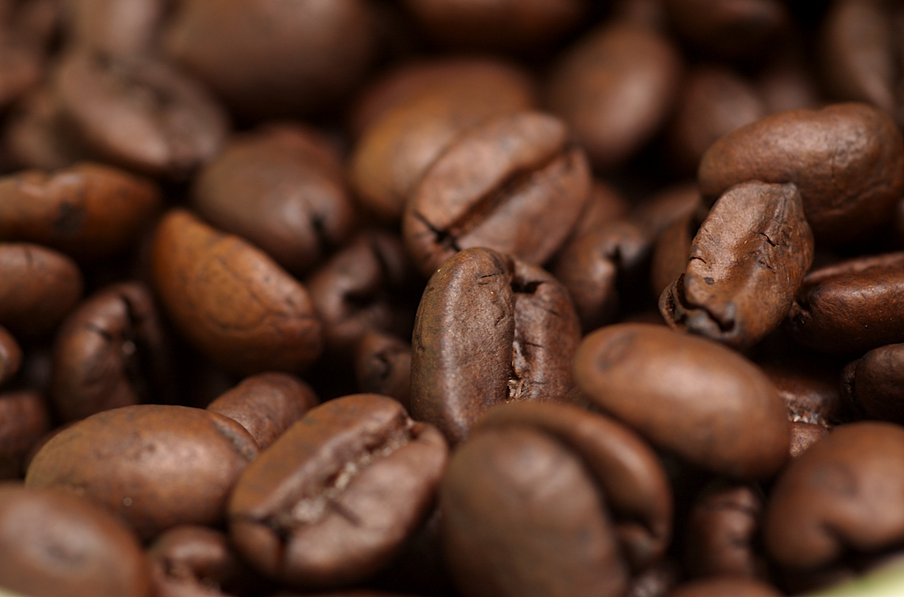
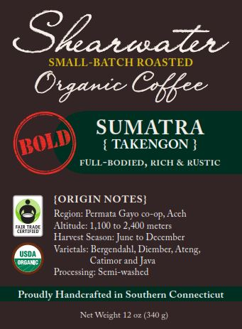
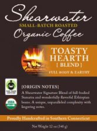
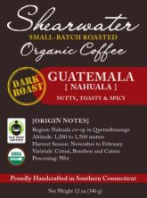
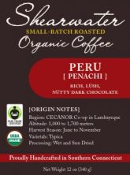
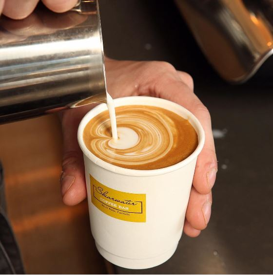
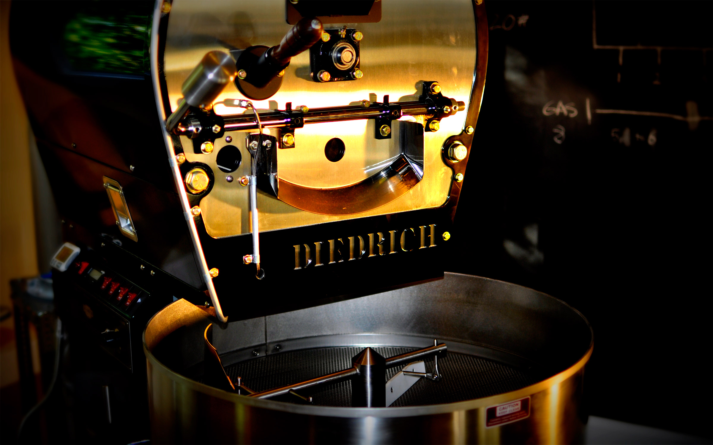
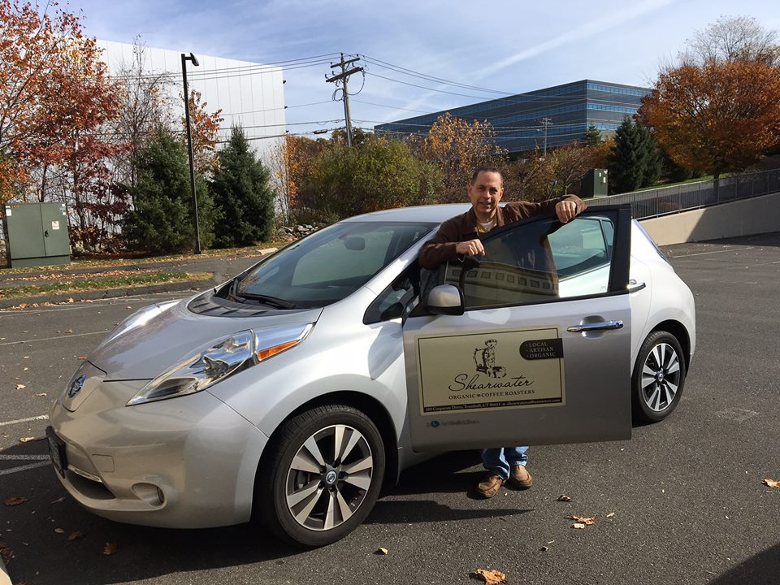

Shearwater 203-880-9565 
Organic coffee, roasted on the Connecticut coast Fresh coffee, Small-batch, USDA Certified Organic coffee roasted in Trumbull. Pick a roast, pick a rhythm.
Start a subscription Shop coffee Build your subscription Coastal Sunrise Whole bean · 12 oz
Every 2 weeks ✓
Every 4 weeks
Continue → How it works
Roasted after you order, never before. 01 Choose a roast Single-origins, signature blends, espresso and Swiss Water decaf.
02 Set your rhythm Every 2 or 4 weeks, whole bean or ground. Pause anytime.
03 Brew it fresh Small batches leave Trumbull within days of roasting.
Our story “It's a way of life, not a product line.” Ed Freedman, founder. Shearwater opened in 2013 as a family-owned encore career and was Fairfield County’s only small-batch organic roaster.
Read the story Visit the roastery
Trumbull, CT Shearwater Organic Coffee Roasters
Roastery
Hours
Prices shown are from the 2019 archived store and are placeholders until confirmed. Concept demo prepared by Devyn Scalpert.
Shearwater 203-880-9565 USDA Certified Organic · Small-batch Find the bagyours. Single-origins, blends, espresso and Swiss Water decaf, roasted 20 lb at a time and stamped with the roast date.
Shop all coffee Subscribe 



Taste finder
How do you like it? Why it tastes different
Organic, small-batch, roast-dated. 01 Organic Grown without synthetic fertilizers, pesticides, herbicides or insecticides, per USDA NOP requirements.
02 Artisanal Roasted 20 lb at a time, profiled to each origin's peak, air-cooled quickly so it's never bitter.
03 Sustainable Diedrich IR-12 infrared roaster, repurposed burlap, organic cleaners and zero-emission EV delivery.
Our story “It's a way of life, not a product line.” Ed Freedman, founder. Shearwater opened in 2013 as a family-owned encore career and was Fairfield County’s only small-batch organic roaster.
Read the story Visit the roastery
Trumbull, CT Shearwater Organic Coffee Roasters
Roastery
Hours
Prices shown are from the 2019 archived store and are placeholders until confirmed. Concept demo prepared by Devyn Scalpert.
Shearwater 203-880-9565 Wholesale organic coffee · Fairfield County The organic roaster behind Connecticut’s best cups. Restaurants, cafés, markets and caterers pour Shearwater: certified organic, roasted to order in Trumbull, delivered free in Fairfield County.
Book a private tasting Shop for home 
01 Restaurants Custom per-pound organic blends, espresso & decaf.
02 Cafés Barista training and commercial equipment support.
03 Markets UPC-coded, roast-dated 12 oz bags, rotated weekly.
Delivery rhythm
Roasted Tuesday & Thursday. Mon Order by noon
Tue Roasted
Wed Delivered · order by noon
Thu Roasted
Fri Delivered
Our story “It's a way of life, not a product line.” Ed Freedman, founder. Shearwater opened in 2013 as a family-owned encore career and was Fairfield County’s only small-batch organic roaster.
Read the story Visit the roastery
Trumbull, CT Shearwater Organic Coffee Roasters
Roastery
Hours
Prices shown are from the 2019 archived store and are placeholders until confirmed. Concept demo prepared by Devyn Scalpert.
Shearwater 203-880-9565 Twenty pounds at a time.
USDA Certified Organic coffee, small-batch roasted in Trumbull, Connecticut since 2013.
Scroll ↓ 01 Grown clean. Every bean is grown without synthetic fertilizers, pesticides, herbicides or insecticides — sourced from small farms in Mexico, Central & South America, East Africa and Indonesia.
02 Roasted on infrared. A Diedrich IR-12, designed to use less electricity than conventional roasters. Air-cooled fast so it’s never bitter.

Coastal Sunrise · Toasty Hearth · Sumatra Takengon · Healthy Harbor · Dark Golden Crema · Coastal Sunrise · Toasty Hearth · Sumatra Takengon · Healthy Harbor · Dark Golden Crema ·
03 Delivered electric. Wholesale orders across Fairfield County go out in a zero-emission vehicle.

Our story “It's a way of life, not a product line.” Ed Freedman, founder. Shearwater opened in 2013 as a family-owned encore career and was Fairfield County’s only small-batch organic roaster.
Read the story Visit the roastery
Trumbull, CT Shearwater Organic Coffee Roasters
Roastery
Hours
Prices shown are from the 2019 archived store and are placeholders until confirmed. Concept demo prepared by Devyn Scalpert.